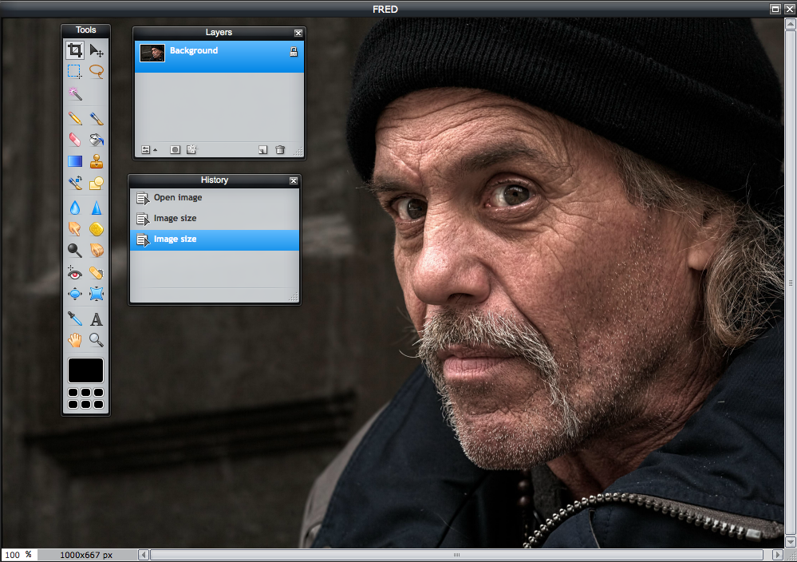
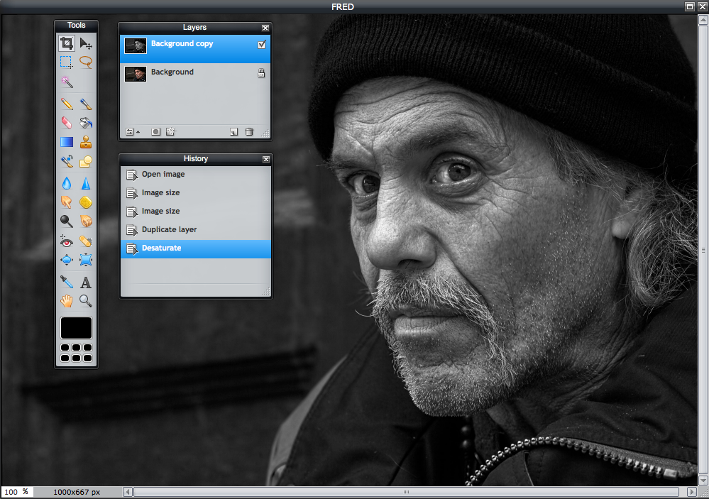
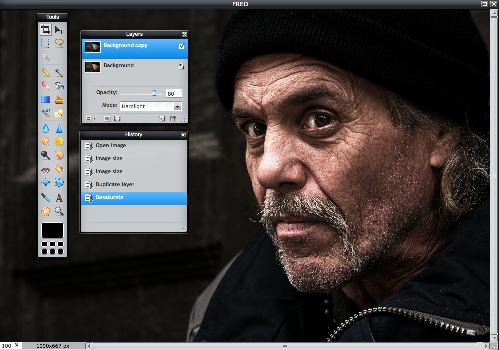
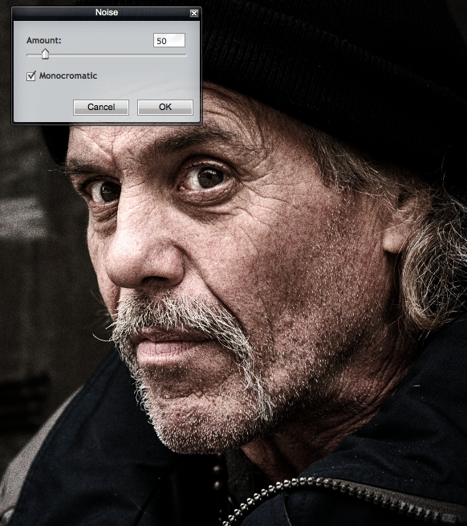
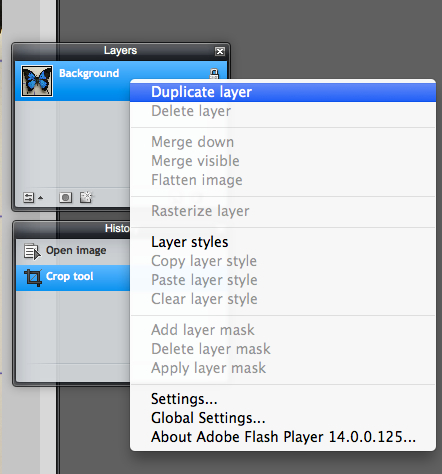
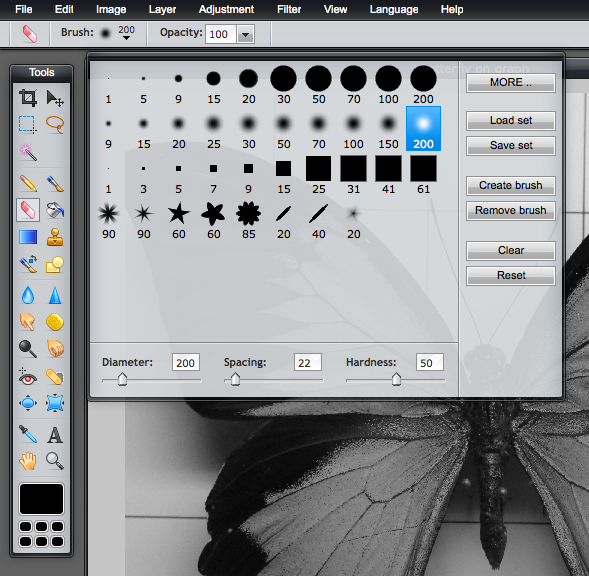
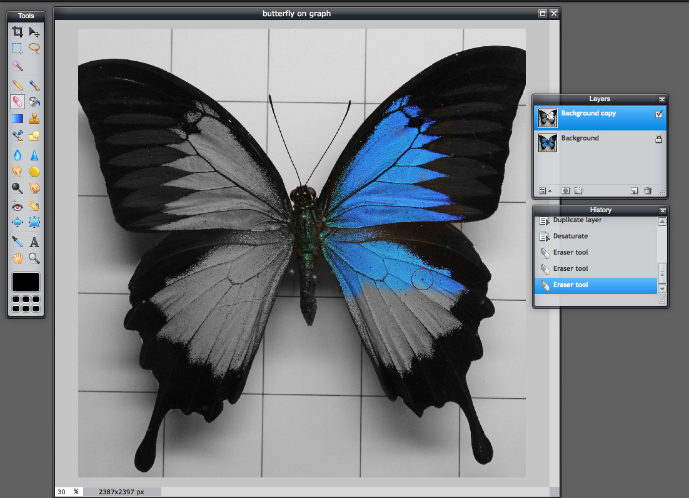
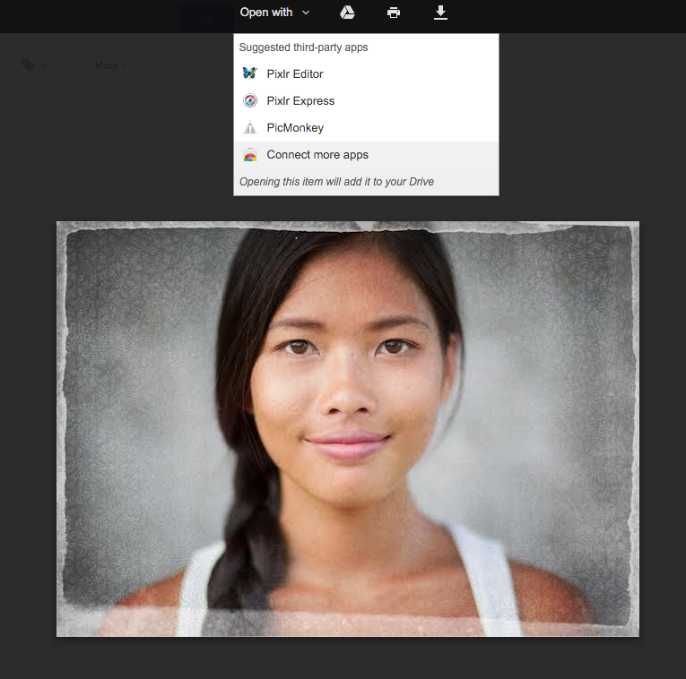
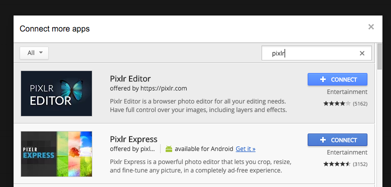
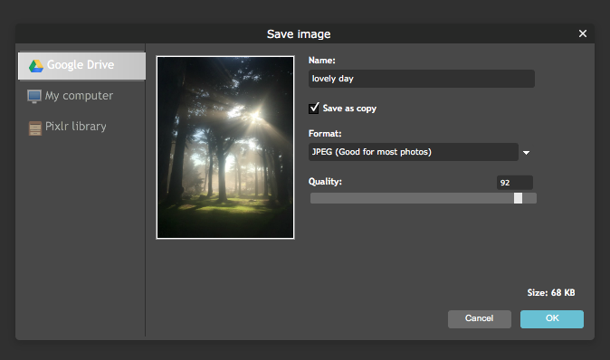

Can I curve text in Pixlr Editor?
Pixlr Editor has a lot of tools to do a lot of graphic design tasks, but the text tools do not have the option for creating curved text along a path.
Pixlr Editor has a lot of tools to do a lot of graphic design tasks, but the text tools do not have the option for creating curved text along a path.
If you open up Pixlr Editor or Pixlr Express and see a grey or blank screen, you’ll want to reinstall Flash.
Pixlr Editor and Pixlr Express are Flash-based apps, and from time to time Adobe updates Flash.
If your computer is running an older version of Flash and you see only a grey screen, a quick update or reinstallation of Flash should get you back up and running.
Visit this page on Adobe’s site, which will show you which version of Flash you’re running. You may be prompted to update Flash on your computer.
Note: You will need to restart your browser before launching Pixlr Editor or Pixlr Express.
Note for Chromebook users: You may not be able to reinstall Flash manually. Flash may be tied to an automatic Chrome update for Chromebook users.
Pixlr Editor is used by a lot of nonprofits — and especially educators. We get questions from time to time from educators and nonprofits asking if we offer discounted licenses or if we have built our software to comply with special policies that address privacy concerns. We hope this article helps answer those questions if you have them:
Why use Pixlr Editor for teaching?
Ultimately, it’s up to teachers or nonprofit heard to decide if any software works for them. A lot of educators like using Pixlr Editor because its free; it works in virtually any browser; it doesn’t require an account; and it doesn’t share out images to third-party social networking services. In fact, we don’t host any public user generated content.
Our web apps Pixlr Editor and Pixlr Express are designed for digital output only and will automatically compress those images to 72 dpi. High resolution is not an option.
We love grungy street photography, but we don’t always know how to get that look out of just a camera. Here’s a little secret: You usually can’t. Many of the gritty, urban street photos you see have some post-processing work done on them. We don’t think there’s anything wrong with that. In fact, we’re going to show you how to add a little gritty intensity to your portraits using Pixlr Editor.
First, of course, you’ll need a portrait. If your portraits subject looks a little menacing to begin with — even better. Ours certainly does:

Open your image in Pixlr Editor. You’re going to want to duplicate your background layer. You can do this from the Adjustments menu, or just right click on the layer in the Layers toolbar and choose Duplicate layer. Next, we want to knock out the color in this layer. Choose Adjustments > Desaturate and you’ll see that this will turn your layer into black and white:

Next, we’re going to blend these two layers together. This will add intensity to the photo’s details, but the key to getting this right is controlling the intensity. For our image, we want to dial back the opacity of the added layer to about 80%. Then, we’re going to use one of the layer blending modes to give this layer some additional lighting treatment. You’ll see that you have a number of blending modes to choose from, so try them out to see how each works. We’re using Hardlight, which is what we suggest you start with. This blend mode works great with our black and white layer and gives it a deeper tone.

Those are the basics for blending two layers together. As you experiment with these blend modes, you’ll see that you can get some quite good and subtle effects. But what if you want to keep going and not be so subtle? You certainly can.
Going further
We wanted our image to be a little lighter in the face and darker at the edges. We changed the exposure from the Exposure option in Adjustments menu to lighten up the bright areas.
One thing that we add that helps our street portrait look dark and gritty is to use a vignette effect to darken the edges of the photo and put the spotlight on this man’s face. We choose Filter > Vignette and set it at 50%. This made our outside edges darker.
Finally, we aren’t satisfied with how grungy this guy is. More, please! We add a little “noise.” You’ll find the Noise option in the Filter menu. If you ever used to shoot with high speed film, you’ll notice that this noise effect can give you that kind of grainy look that really works great for street scenes.

The end result is a pretty gritty homeless looking fellow, but he’s probably a softie on the inside. Undoubtedly, he just needs a good hug.

Pixlr Express has a Color Splash option that makes it easy to transform a photo into black and white with areas of color shining through, but you can do this in a more thorough and detailed way in Pixlr Editor. To distinguish between the two processes, we generally think of the more advanced Pixlr Editor process as one of “selective color.”
(One thing to note before you jump in: This article is about how to take a color image and playing with areas of black and white and color in combination. This process requires you to begin with a color image; this isn’t about adding color to a greyscale image. Images that begin as black-and-white images cannot be turned into full-color color images in Pixlr Editor.)
Stacking layers and erasing one layer
The general idea is to double up your layers and then erase part of one layer so that the bottom layer shines through. First, open your image in Pixlr Editor. Then, duplicate the background layer, which you can do by right clicking on the layer itself in your Layers toolbar. Or, look for the Duplicate layer option in the Layers top menu.

Next, simply use the Desaturate option in the Adjustments menu to turn your top (duplicate) layer into a black and white image.

Now, you’re going to simply use the Eraser tool to erase the areas that you want to show up as color. You’ll be erasing the top (duplicate) layer in specific areas with the Eraser, and the Eraser works as a brush. So, choose the best brush tool for the job. If you need to do detail work, consider using a soft brush and increase the hardness. You can also create your own brush if you want.

This image has a fairly clear area we want to color, but if you are working on a more detailed area, try starting with a large brush and working your way to a smaller brush to work on the edging.

You don’t have to create an account to start using Pixlr Editor, but there’s one reason you might want to — you can save your work to your own Pixlr Library. Even better, your Pixlr Library lets you pull in photos from popular photo-sharing services Facebook, Flickr, Picasa, and Google Drive.
To get started, simply sign up for an account by clicking on “Open image from Library.”

You’ll be prompted to either sign up or sign in.

Once you’ve created a Pixlr Library account, you can save your images in folders and create new folders to house sets of images. You can even connect to services like Facebook and open and save images from those services back to your Pixlr Library:

A few things to note about a Pixlr Library:

The clone stamp tool in Pixlr Editor, as you might imagine, does one simple thing: It copies image details and pastes those details in the place of your choosing on the same layer. But, the clone tool can be used for more than just straight copying. Many people use it to create natural-looking blending when they are touching up a photo they’ve manipulated. Here are a few instances that illustrate some of its uses:
Using your brushes
What’s handy about this tool is that you have all of the brush options at your disposal. You can even use brushes you’ve created and saved before for other purposes. It’s a good idea to use a soft edge brush unless you want a very hard line where the cloning happens. Likewise, you can lower the opacity for a light blending touch.

A quick note about the “aligned” option
One sometimes confusing detail about the clone tool is how to use the “aligned” option. When aligned is not selected, your sample point will remain where you initially sampled until you sample again. Every time you use your brush, you’ll paste the original area again and again. When align is selected, the sampling point follows your mouse as you move it.

Cloning, step-by-step
Examples of usage
Let’s say we’d like to add a second “T” next to the one at the bottom of this graffitied oil drum. The radius of 180 pixels is about the right size for our brush, which we can specify in our options.

The background behind the T is relatively solid, so we don’t need to worry about using hard edged brushes. In this simple instance, we can completely copy and paste the T. Very easy.

Now, let’s say we want to remove some of the graffiti — to essentially erase it by pasting over it with the background color of the oil drum. We choose a softer edged brush (50 pixels) and a lower opacity (70 pixels).

If you move your mouse to a new area and paint, you’ll paint on the same thing you originally cloned. You can sample a new clone area at any time, but notice how we can begin to remove the blue-and-white sticker on the oil drum by using the clone stamp tool:

The toolbar in Pixlr Editor always appears on the left-hand side, although you can drag it anywhere you like.
Crop (Shortcut: C)
Reframe your entire canvas to a desired size and remove everything else. Drag to reframe and hit Return — you’ve just cropped your image. You can move the crop area around before committing to a crop. Additional options: Adjust the aspect ratio to crop to a specific height and width ratio (e.g., a perfect square). Adjust output size if you want to crop to a specific pixel size.
Move (Shortcut: V)
Fairly self-explanatory, this lets you move whatever you’ve selected around the canvas: text, a layer — just about anything you’ve selected.
Marquee (Shortcut: M)
Use this to select rectangular areas of a layer or the canvas. After selecting, you can perform specific actions on that area. Great for cutting out slices of an image to copy and paste elsewhere. Additional options: You can specify a rectangular or elliptical area, pick an aspect ratio or fixed size for your selection. Feathering creates a softer edge at the selection’s border. Anti-aliasing creates a more crisp outline.
Lasso (Shortcut: L)
The lasso tool is a free-hand version of the marquee tool. Use this to define an area in any shape you can draw. Additional options: Need to create an irregular shape with straight sides? The polygonal lasso lets you create shapes like hexagons. Feathering gives you control over how soft edges will be; use anti-alias to achieve sharper edges.
Wand (Shortcut: W)
The wand will make a marquee-style selection based on values (i.e., tone and color) that are similar to the area clicked. It’s great at selecting large blocks of solid color. Additional options: Experiment with tolerance levels. Use anti-alias for achieving sharper edges.
Pencil (No shortcut)
Draw on an image or layer free hand. Additional options: You have a number of pencil types to choose from for different drawing effects. You can change the size and opacity of your pencil.
Brush (Shortcut: B)
Much like the pencil, the brush lets you draw freehand, but with many more options. Additional options: Choose from a ton of brush types; you can even create your own customized brushes and save them. You can also alter how the “paint” is applied and mimic different brush types (e.g., hard tip).
Erase (Shortcut: E)
Use the erase tool to remove details. You can also erase details from a specific layer. Additional options: Brush types for erasing mimic the brush tool, and you can alter your eraser opacity for better results.
Paint bucket (Shortcut: G)
Dump a big mess of color onto a layer or on your background. If you want more control over how messy that paint dump is, adjust the tolerance. Additional options: A lower tolerance level will limit coloring to similarly colored pixels (light coloring); higher tolerance equals a stronger use of your paint bucket to fill less similar pixels (heavy color dumping)
Gradient (No shortcut)
Use this tool whenever you want to create a gradient — a gradual colored shading — of two colors. Pixlr blends them for you based on your settings. Additional options: Define your foreground and background colors and alter any other settings (linear vs. radial, spread method, mode); then, click on a starting point on your canvas, drag your mouse to the endpoint, and let go. Your gradient will fill the layer or selection.
Clone stamp (Shortcut: S)
Lets you sample pixels in one defined area and replicate those pixels elsewhere. While you can use this to duplicate an entire object in your image, people often use this to blend colors and textures in an impressionistic way or for minor touch up of blemishes. Additional options: You’ll want to choose your brush size, and you can adjust opacity if you desire. If you select aligned, the clone source moves when you move your cursor to a different location. If you want to clone multiple times from the same location, don’t choose aligned. You will always clone in the layer you’re working on unless you check the box to clone all layers.
Color replace (No shortcut)
The color replace tool replaces areas under your brush with a new, desired color — while preserving the underlying texture and shadows. Additional options: You may want to change brush size to avoid coloring outside of the area you want to color, but the most important detail of this tool is the tolerance level. Flat areas of color can be colored using a lower tolerance; areas with a lot of texture or shading may require a higher tolerance. Experiment and undo if necessary!
Drawing (No shortcut)
Use the drawing tool to create basic geometric shapes like lines, rectangles, rounded rectangles, and ellipses. Additional options: You can control the opacity, border size (outline), and choose to color in your shapes or not. If you have advanced skills, you have many mode choices to choose from; if you’re not an expert, it’s probably best to stick to normal mode.
Blur (Shortcut: R)
Pretty straightforward: Make things blurry. Additional options: Click and drag to blur. Keep clicking to make it blurrier. This is a good tool for blending harsh edges together.
Sharpen (Shortcut: Y)
This applies the sharpen filter to a brush tool. Sharpening increases the contrast between pixels, which has the visual effect of bringing out details and highlights. It’s very easy to overdue this, so take a light hand when you sharpen! Additional options: You can change the brush size and strength. Since it’s easy to over-sharpen an image, experiment with different strength levels.
Smudge (Shortcut: U)
A bit different than blur, smudge effectively combines pixels of different colors to produce an effect that can look like smudged paint. Additional options: Brush size and brush strength are adjustable.
Sponge (Shortcut: P)
The sponge tool enhances or sops up color, depending on your settings. It’s a great tool for saturating or desaturating specific areas of an image. Additional options: You can change the brush size and brush strength, but the most important setting is whether you want to saturate (increase) or desaturate (decrease) coloring.
Dodge (Shortcut: O)
Use the dodge tool to lighten specific areas. Note that this is a tool that deals with contrast (light vs. dark) and not color, although color may sometimes appear to change based on your lightening. Additional options: You can change brush size and exposure settings. You can also choose to focus your lightening on shadows, midtones, or highlights.
Burn (Shortcut: N)
The opposite of dodging, burning lets you darken an area. Additional options: As with dodging, you can change brush size and exposure, as well as focus your darkening on shadows, midtones, or highlights.
Red eye reduction (No shortcut key)
A miracle worker of a tool, red eye reduction easily corrects the annoyingly common red-eye effect. This is a single-purpose tool that usually just works the way you want it, but if you find you’re having trouble, try different tolerance settings.
Spot heal (No shortcut key)
Super useful, the spot heal tool can help remove scratches or blemishes by simply clicking on the area. Additional options: Besides size of brush, you have a choice of Pixlr choosing to blend the area with nearby area values or generate a pattern. Generally, you will only want to choose a pattern if you’re blending an area that has a pattern (e.g., a chain-link fence).
Bloat (Shortcut: A)
The bloat tool lets you distort an area as if it were being seen through a convex lens. Great for embellishing the reflection seen in a pair of sunglasses, for example. Additional options: You can choose the size and strength of your brush.
Pinch (Shortcut: K)
The opposite of the bloat tool, pinch creates an effect like you might see through a concave lens — everything becomes smaller toward a center point. Additional options: Choose the size and strength of your brush and start pinching.
Colorpicker (Shortcut: I)
Simple and essential, the colorpicker lets you sample colors from your image for use with other tools (e.g., paint bucket).
Type (Shortcut: T)
Need to add a few words? The type tool lets you add characters, letters, words, numbers, etc. Click where you want your text to appear on your layer or image. You can control the font and its size, style and color. Important to know: Pixlr Editor will include most fonts that are installed on your own computer.
Hand (Shortcut: H)
Use the hand tool to move your image around, especially useful if you are zoomed in working on details and need to slide your canvas around to reach an unseen area. Additional handy shortcut for this tool: Hold down the space bar nearly anytime you’re working in Pixlr and you can use the hand tool.
Zoom (Shortcut: Z)
Unless you have a 100-inch monitor, you’re inevitably going to need to do some detail work. Using zoom, you can either click to zoom or draw a rectangular area to zoom into. Pro tip: Use your shortcut keys! Zoom in quickly by holding down the shortcut key (Z) and clicking your mouse in the desired location.
Set main color (No shortcut key)
Your color palette contains the color you’re currently working with and the last six custom colors you’ve chosen. Clicking within the large color palette area brings up a window where you can choose colors based on HSL, RGB, Web, or IMG specifications. Or, just pick something that looks good.
If you’re a dedicated Google user, making Pixlr Express or Pixlr Editor default apps for images will save you some serious clicks — especially if you use your Google Drive as a repository or backup for all of your photos.
When you receive an email with attachments, clicking on the image preview in the Gmail interface expands the preview into an overlay with a black background. You’ll see an “Open with” drop-down menu. Clicking on that will offer up some suggested apps from Google. If you see ours as an option, you can simply click on it to open your image in either Pixlr Editor or Pixlr Express.

If you don’t see that option automatically presented, it’s easy to add us. Click on “Connect more apps” and search for “pixlr” and you can connect one or both of the apps.

From then on, you can open up images in our apps from both Gmail and Google Drive at will. The real beauty of this integration is in its ability to save back your images to Google Drive. For example, we opened up this image we took while on an early morning jog in Golden Gate Park and made a quick edit in Pixlr Editor. When we save, we’re shown the usual Pixlr Library options, but now you’ll notice that Google Drive is shown as your save location. You can either save over your image or save a copy by checking a box.

As you can see, it’s pretty easy to set up and offers a quick, no-hassle way to edit photos on the fly that you receive as attachments or deposit in your Google Drive. Here’s hoping the time you save will be better spent making your photos look that much better.